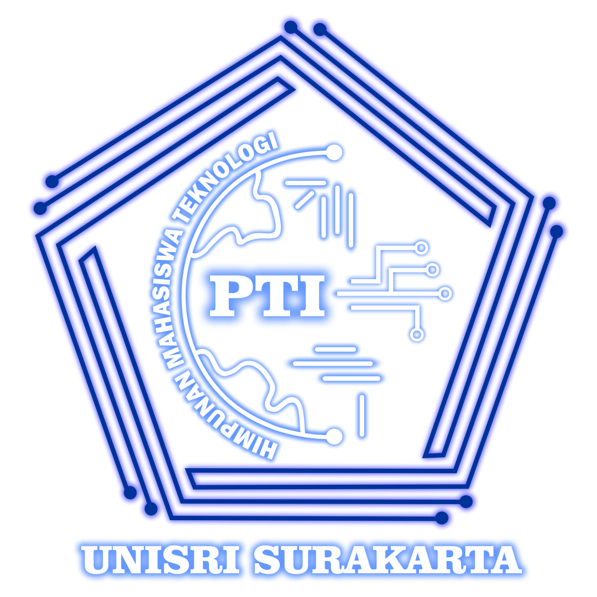
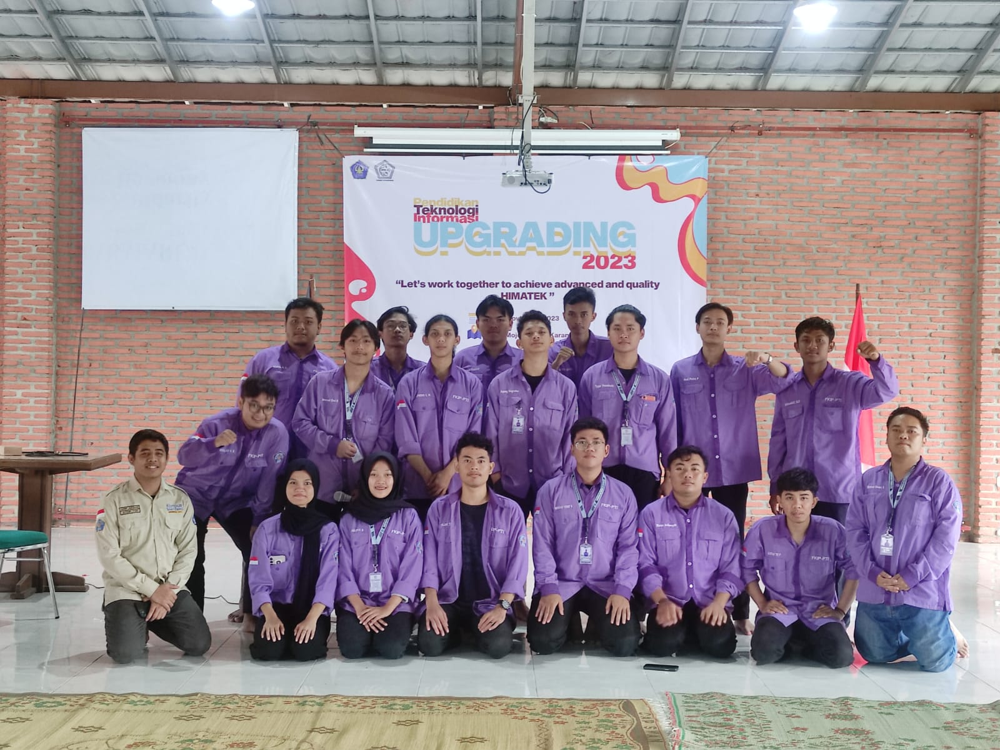

|  | |||||
| Home | Visi Misi | Himatek | Profil Saya | ||
Himpunan Mahasiswa Teknologi InformasiHimpunan Mahasiswa Program Studi Pendidikan Teknologi Informasi (HIMATEK) adalah organisasi kemahasiswaan sebagai lembaga eksekutif di tingkat program studi yang menyelenggarakan kegiatan bersifat penalaran dan keilmuan sesuai dengan bidang keilmuan jurusan terkait. Dari segi kegiatan, Himatek sebagai tempat yang pas untuk mencurahkan gagasan, aspirasi, pendapat, bahkan dapat digunakan sebagai media mengembangkan bakat dan melatih kepemimpinan. |
|||||